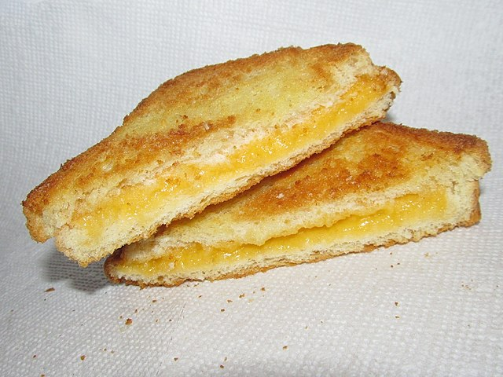

Grilled Cheese Recipe

How make a classic grilled cheese sandwich
The classic grilled cheese sandwich is a staple in the world of comfort food.
made with just three simple ingredients: bread, cheese, and butter.
sandwich is a delicious and convenient meal that can be enjoyed any time of day.
Whether you're in the mood for a quick and easy lunch or a satisfying dinner,
the classic grilled cheese is a timeless dish that will never disappoint.
With endless variations and ingredients to choose from, the possibilities are endless for this classic dish.
Ingredients:
- 2 slices of bread of your choice
- 2 slices of cheese of your choice
- 1 tablespoon of butter
Steps:
- Heat a non-stick pan over medium heat.
- Spread one side of each slice of bread with butter.
- Place one slice of bread, buttered side down, in the pan.
- Put the cheese slices on top of the bread slice in the pan.
- Put the other slice of bread on top, buttered side facing up.
- Cook until the bottom slice of bread is golden brown, about 2-3 minutes.
- Flip the sandwich over with a spatula and cook until the other side is golden brown and the cheese is melted, about 2-3 minutes.
- Serve hot and enjoy!